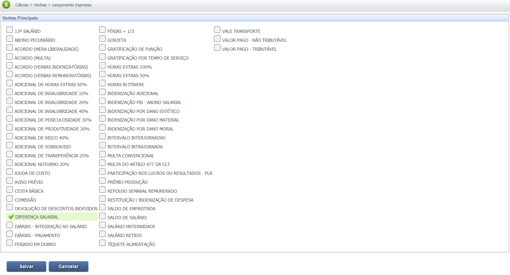
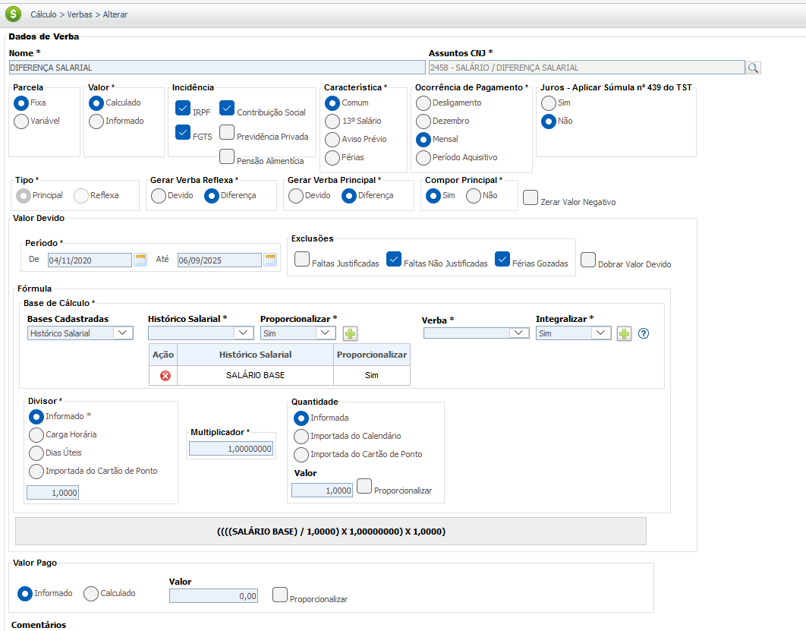
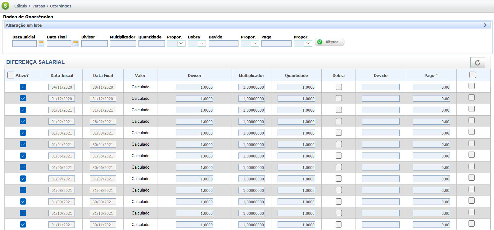

Diferenças Salariais
A diferença salarial refere-se à variação na remuneração paga a indivíduos, que pode ocorrer por diversos motivos. É importante distinguir entre a disparidade salarial justificada e a desigualdade salarial discriminatória. Aqui, você encontrará uma análise detalhada das diferentes espécies de diferenças salariais e como elas impactam os cálculos trabalhistas.
Tipos de Variação Salarial
Diferença Salarial Justificada (ou Disparidade Salarial Natural): É a variação de salário que é justificada por fatores objetivos e legais, como:
- Nível de qualificação e experiência: Pessoas com maior formação, certificações ou mais tempo de experiência na função podem receber mais.
- Desempenho e produtividade: Diferenciais baseados em metas atingidas, qualidade do trabalho ou resultados superiores.
- Regime de trabalho: Jornada parcial versus jornada integral, ou regime de turnos específicos (que podem gerar adicionais).
- Tempo de empresa/progressão na carreira: Salários diferentes devido ao tempo que cada um está na empresa ou ao nível hierárquico alcançado.
Desigualdade Salarial ou Discriminação Salarial: É a diferença de remuneração que não é justificada por critérios objetivos e se baseia em fatores discriminatórios ou sistêmicos, como:
- Gênero: Homens e mulheres recebendo salários diferentes por desempenharem o mesmo trabalho ou trabalho de igual valor, com a mesma produtividade e qualificação.
- Raça ou Etnia: Indivíduos de minorias raciais ou étnicas recebendo menos que seus colegas com as mesmas qualificações e funções.
- Idade, orientação sexual, estado civil, ou origem: Qualquer diferença salarial baseada em características pessoais que não se relacionam com o trabalho executado.
Em resumo, enquanto diferenças salariais podem ser legais e justas quando baseadas em critérios como qualificação e desempenho, a desigualdade salarial é o problema social e legal que ocorre quando a diferença é fruto de discriminação. A legislação busca garantir a equiparação salarial, ou seja, que para trabalho de igual valor, o salário seja igual, combatendo ativamente a discriminação salarial.
Mecanismos de Correção Salarial
Estes são os principais instrumentos jurídicos e verbas judiciais utilizadas para pleitear a correção de diferenças salariais indevidas ou discriminatórias:
- Equiparação Salarial: O direito de receber o mesmo salário de um colega que exerce a mesma função.
- Desvio de Função: Quando o empregado é contratado para uma função, mas passa a exercer as tarefas de outra com salário superior.
- Acúmulo de Função: Quando o empregado realiza tarefas extras, além das originais, que são incompatíveis com seu cargo e exigem um "plus" salarial.
- Outras Diferenças Salariais: Diferenças por piso salarial, reajustes normativos, promoções não concedidas e substituições temporárias.
Base Legal e Jurisprudência
O direito ao recebimento de Diferenças Salarias tem por base a legislação a seguir:
Fontes Normativas
Constituição Federal (CF/88):
- Art. 5º, caput e I:
Todos são iguais perante a lei, sem distinção de qualquer natureza, garantindo-se aos brasileiros e aos estrangeiros residentes no País a inviolabilidade do direito à vida, à liberdade, à igualdade, à segurança e à propriedade, nos termos seguintes: I - homens e mulheres são iguais em direitos e obrigações, nos termos desta Constituição;
- Art. 7º, XXX:
Art. 7º São direitos dos trabalhadores urbanos e rurais, além de outros que visem à melhoria de sua condição social:
proibição de diferença de salários, de exercício de funções e de critério de admissão por motivo de sexo, idade, cor ou estado civil;
Consolidação das Leis do Trabalho (CLT):
- Art. 461 (Equiparação Salarial):
Sendo idêntica a função, a todo trabalho de igual valor, prestado ao mesmo empregador, no mesmo estabelecimento, corresponderá igual salário, sem distinção de sexo, etnia, nacionalidade ou idade.
Lei nº 14.611/2023 (Igualdade Salarial e de Critérios Remuneratórios):
- Art. 1º, caput:
Esta Lei dispõe sobre a igualdade salarial e de critérios remuneratórios entre mulheres e homens para a realização de trabalho de igual valor ou no exercício da mesma função.
Jurisprudência
Equiparação Salarial
Súmula nº 6 do TST (Principais Incisos):
I - Para os fins previstos no § 2º do art. 461 da CLT, só é relevante a experiência na função e não no emprego. III - A equiparação salarial só é possível se o empregado e o paradigma exercerem a mesma função, desempenhando as mesmas tarefas, independentemente da denominação dada aos cargos. VIII - Em caso de equiparação salarial, o ônus da prova do fato impeditivo, modificativo ou extintivo da equiparação salarial é do empregador (art. 818 da CLT). X - O conceito de "mesmo estabelecimento" a que se refere o art. 461 da CLT, diz respeito ao mesmo local de trabalho, independentemente da jurisdição do Tribunal Regional do Trabalho.
Desvio de Função
Princípio do TST Consolidado (Vedação ao Enriquecimento Sem Causa - Art. 884 CC):
"O desvio de função, que ocorre quando o empregado é contratado para uma função, mas exerce tarefas de outra com salário superior, não gera direito ao reenquadramento no cargo, mas sim o direito ao pagamento das diferenças salariais entre o salário do cargo contratado e o da função efetivamente exercida, enquanto perdurar o desvio."
*(Nota: Este entendimento é pacífico no TST para o setor privado e tem como base o princípio da vedação ao enriquecimento ilícito do empregador. Precedente histórico: OJ nº 125 da SDI-1 do TST, cancelada por razões específicas do setor público).*
Acúmulo de Função
Jurisprudência Consolidada e CLT Art. 456, parágrafo único:
A jurisprudência majoritária reconhece o acúmulo de função e arbitra um *plus* salarial (geralmente percentual sobre o salário) apenas quando há acréscimo de tarefas de maior complexidade, incompatíveis com o cargo contratado, ou que exijam um esforço superior ao ajustado.
CLT, Art. 456, parágrafo único: "A anotação na Carteira de Trabalho e Previdência Social será feita mediante a apresentação de documento comprobatório. Parágrafo único. A prestação de serviços a mais de um empregador, por si só, não caracteriza acúmulo de funções, salvo se houver incompatibilidade de horários ou se as atividades forem inerentes a dois cargos distintos."
Base de Cálculo e Deduções
IMPORTANTE: As Diferenças Salariais devem integrar o valor da Remuneração Total (Salário-Base + Adicionais + H. Extras + Gratificações ) para fins de cálculo das deduções obrigatórias fiscais e para formação da base de cálculo das Verbas Reflexas.
Definição da Base de Cálculo
A base de cálculo é o montante sobre o qual incidirão os cálculos para apurar o valor devido.
Para calcular a Diferença Salarial, considera-se o valor devido a título de salário que deixou de ser pago. Por ter natureza salarial, ela serve de base de cálculo para diversas outras verbas.
Composição da Base de Cálculo:
A Base de Cálculo da Diferença Salarial é formada pelo somatório das bases:
- Base Principal: Diferença do Salário Base (Salário Devido - Salário Pago)
- Bases Adicionais: A mudança de valor no salário base impacta nas verbas de natureza salarial:
- Comissões.
- Adicionais (Insalubridade, Periculosidade, Noturno, Horas Extras Habitualizadas).
Obs.: No sistema do PJe somente é necessário cadastrar a Diferença Salarial do Salário Base. Em relação as demais verbas impactadas (comissões, adicionais, horas extras), estas encontram-se parametrizadas para que, quando for lançada a Diferença Salarial, haja repercussão nas referidas verbas.
Importante: Para o cálculo judicial, o período de apuração deve respeitar a data da propositura da ação e o prazo prescricional (geralmente cinco anos).
Exemplo Prático (Valor Bruto Mensal)
O cálculo da diferença salarial é a subtração direta entre o valor de salário devido e o valor de salário efetivamente pago.
Um empregado deveria receber R$ 3.100,00, mas recebia R$ 2.000,00 (Salário do Reclamante). A diferença salarial mensal é:
Diferença Salarial Bruta = R$ 3.100,00 (Devido) - R$ 2.000,00 (Pago) = R$ 1.100,00
Dessa forma, o valor da diferença salarial bruta mensal devida é de R$ 1.100,00, que será multiplicado pelo período de apuração.
| Item | Valor |
|---|---|
| Salário Devido (Paradigma) | R$ 3.100,00 |
| Salário Pago (Reclamante) | R$ 2.000,00 |
| Período de Apuração (Exemplo) | 12 meses |
| Diferença Salarial Bruta Total | R$ 13.200,00 |
Deduções da Base de Cálculo
Deduções Fiscais e Previdenciárias:
O desconto da contribuição para o Instituto Nacional do Seguro Social (INSS) e do Imposto de Renda Retido na Fonte (IRRF) é obrigatório, pois a diferença salarial possui natureza salarial e remuneratória.
Deduções/Compensações Possíveis:
- Valores Pagos a Título Idêntico: Se o empregador já pagou valores que se confundem com a verba principal ou reflexa pleiteada, há compensação.
- Parcelas de natureza Indenizatórias: Parcelas indenizatórias (como multas) não sofrem desconto de INSS e IRRF, mas podem ter deduções específicas.
Exemplo Prático (Diferença Mensal Bruta - Deduções = Líquido)
Considerando a Diferença Salarial Mensal Bruta de R$ 1.100,00 (apenas o valor principal) para demonstrar a aplicação de descontos obrigatórios:
| Item | Valor |
|---|---|
| Diferença Salarial Bruta (Mensal) | R$ 1.100,00 |
| (-) Dedução INSS (7,5% da faixa) | R$ 82,50 |
| Base de Cálculo IRPF (R$ 1.100,00 - R$ 82,50) | R$ 1.017,50 |
| (-) Dedução IRPF (Isento nesta faixa) | R$ 0,00 |
| Total Deduções (INSS + IRPF) | R$ 82,50 |
| Diferença Salarial Líquida (Mensal) | R$ 1.017,50 |
Verbas Reflexas
A Diferença Salarial, por representar a remuneração, serve como base de cálculo para outras verbas rescisórias. Seu valor entra no cálculo de verbas como:
| Verbas Reflexas | Cálculo do Reflexo |
|---|---|
| Descanso Semanal Remunerado (DSR) | Incide sobre horas extras e outros adicionais habituais recalculados. |
| Férias + 1/3 Constitucional | A remuneração das férias é calculada com o novo salário/remuneração. |
| 13º Salário (Gratificação Natalina) | A base de cálculo do 13º é o novo salário/remuneração. |
| Aviso Prévio (se trabalhado) | O valor do aviso prévio (trabalhado) é o novo salário. |
| Fundo de Garantia por Tempo de Serviço (FGTS) | Incide 8% sobre o valor principal da diferença salarial e sobre todos os seus reflexos que possuem natureza salarial (horas extras, adicionais, 13º salário, etc.). |
| Multa de 40% sobre o FGTS | Reaplicada sobre a diferença de FGTS depositada. |
Atenção: A Diferença de Salário é uma verba principal. Os reflexos mencionados acima são cálculos que dependem da existência das verbas principais.
Calculadora (Simulação)
Utilize esta ferramenta para estimar o valor das diferenças salariais de forma rápida. Atenção: Esta calculadora não inclui reflexos, juros, ou correção monetária.
Resultados:
Diferença Mensal: R$ 0,00
Diferença Total: R$ 0,00
Lançamento no PJe-Calc
A seguir, confira o passo a passo para o lançamento da verba no PJe-Calc, utilizando a opção "Expresso":
-
Acessar Verbas e Escolher Lançamento: No menu de
navegação à esquerda, clique na opção Verbas para iniciar o lançamento. Após o
comando,
será exibida a tela para escolha do Lançamento da Verba. Escolha a opção Expresso.

- Seleção da Verba: O sistema abrirá as opções de verbas, escolha a verba Diferença Salarial e clique no botão Salvar 
-
Quadro de Verbas e Ações: O sistema exibirá um quadro
com os campos:
- Ações - contendo as opções de configurações da verba selecionada (parâmetros,
ocorrências e
exclusão)

-
- Parâmetros da Verba

-
- Ocorrências da Verba

-
- Excluir

- Verba Principal - verba selecionada para lançamento.
- Verba Reflexa - em que ao clicar no botão Exibir serão listadas todas as verbas reflexas ligadas a Verba Principal.
- Parametrização da Verba: Ao clicar no botão Parâmetros da Verba serão exibidas todas as configurações necessárias para a parametrização da Verba Principal. 
- Registro de Ocorrências: Ao clicar no botão Ocorrências da Verba serão exibidas todas as configurações necessárias para registro das ocorrências da Verba Principal. 